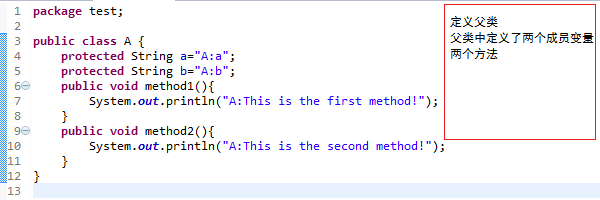
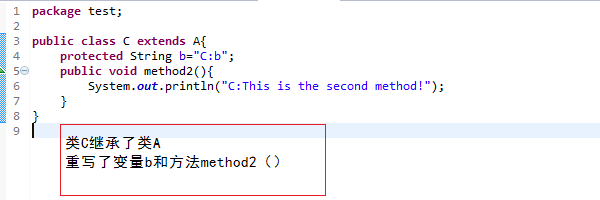
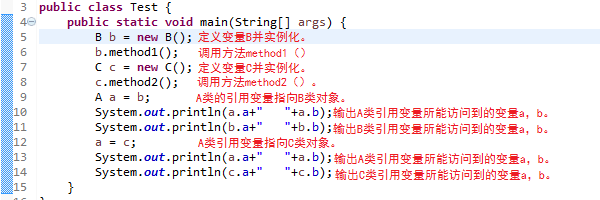
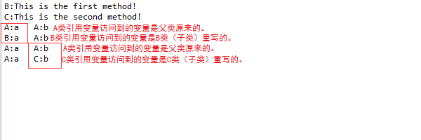

Java向上转型详解
关键词： 向上转型 , 同名变量 ，同名方法
对象的上转型其实就是多态的一种表现。不知道大家有没有遇到这种情况！向上转型的对象访问的变量是父类原来的而不是子类重写的，但访问的方法是子类重写的！
大家都知道当向上转型的对象访问的方法是子类重写的方法（如果子类重写了父类的方法）。但为什么子类重写了父类的变量，向上转型的对象却访问的是父类的对象呢？今天我将和大家一起分析这个问题！
1. 情景再现
类A的编写
类B的编写

类C的编写

测试类的编写

大家认为会输出结果呢？我本以为A类的引用变量a会输出B、C对象重写后的变量！然而并不是这样的！！！~~~~(>_<)~~~~
测试结果

进过binge多方查找资料、询问大神，终于还是对这个问题有所认识！下面我将就我所知道的向大家解释。
2. JVM的内存区域
我是介绍！快点我！
OK!binge要说的也就这些了！希望大家从中有所收获，在家，下篇文章见！！^_^